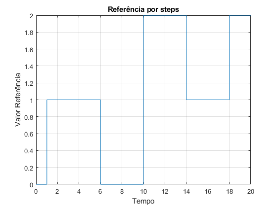

Exercício 13
Exercício 13.1 - Referência por steps
%Reset do ambiente de trabalho clear; close all; %Subsys com ambos os ramos f = 1; %Tempo de Simulação ttotal = 20; %Com perturbação b = 0; %Intervalo escolhido do exercício anterior yl = 0.2; %Calculo dos k's k1 = 1/yl; k2 = sqrt(2*k1); sim('steps'); figure; plot(tout, steps); grid on; title('Referência por steps'); xlabel('Tempo'); ylabel('Valor Referência'); sim('e_131'); figure; plot(tout, steps, "DisplayName", "Ref"); hold on; plot(tout, y, "DisplayName", "y"); grid on; title('Evolução temporal da posição radial da cabeça (y)'); xlabel('Tempo'); ylabel('Posição (y)'); legend(); figure; plot(tout, dy); grid on; title('\textbf{Evolu\c{c}\~ao temporal da velocidade radial da cabe\c{c}a ($\dot{y}$)}', 'Interpreter', 'latex'); xlabel('Tempo'); ylabel('Velocidade ($\dot{y}$)','Interpreter','latex'); figure; plot(y, dy); grid on; title('\textbf{Velocidade em fun\c{c}\~ao da posi\c{c}\~ao da cabe\c{c}a (y, $\dot{y}$)}', 'Interpreter', 'latex'); xlabel('Posição (y)'); ylabel('Velocidade ($\dot{y}$)','Interpreter','latex'); figure; plot(tout, u); grid on; title('\textbf{Evolu\c{c}\~ao temporal do Sinal de Controlo (u(y, $\dot{y}$))}', 'Interpreter', 'latex'); xlabel('Tempo'); ylabel('Sinal de Controlo (u(y, $\dot{y}$))','Interpreter','latex');

Comentários: Podemos observar apartir na Fig.x que a posição da cabeça de leitura tenta seguir o sinal de referência por steps mas como podemos ver no ínicio do gráfico, como o sistema não é instântaneo quando o intervalo de tempo é pequeno o sistema pode não conseguir atingir o valor de referência. Também se pode verificar o atraso de resposta nos instantes posteriores, caso existam muitas variações de período pequeno o sistema pode tornar-se oscilatório sem nunca chegar ao sinal de referência.
Exercício 13.2 - Referência por rampas
%Reset do ambiente de trabalho clear; close all; %Subsys com ambos os ramos f = 1; %Tempo de Simulação ttotal = 20; %Com perturbação b = 0; %Intervalo escolhido do exercício anterior yl = 0.2; %Calculo dos k's k1 = 1/yl; k2 = sqrt(2*k1); sim('ramps'); figure; plot(tout, ramps); grid on; title('Referência por rampas'); xlabel('Tempo'); ylabel('Valor Referência'); sim('e_132'); figure; plot(tout, ramps, "DisplayName", "Ref"); hold on; plot(tout, y, "DisplayName", "y"); grid on; title('Evolução temporal da posição radial da cabeça (y)'); xlabel('Tempo'); ylabel('Posição (y)'); legend('Location', 'NorthWest'); figure; plot(tout, dy); grid on; title('\textbf{Evolu\c{c}\~ao temporal da velocidade radial da cabe\c{c}a ($\dot{y}$)}', 'Interpreter', 'latex'); xlabel('Tempo'); ylabel('Velocidade ($\dot{y}$)','Interpreter','latex'); figure; plot(y, dy); grid on; title('\textbf{Velocidade em fun\c{c}\~ao da posi\c{c}\~ao da cabe\c{c}a (y, $\dot{y}$)}', 'Interpreter', 'latex'); xlabel('Posição (y)'); ylabel('Velocidade ($\dot{y}$)','Interpreter','latex');
Comentários: No caso em que a referência é dada por uma sequência de rampas podemos verificar que o sinal têm dificuldade a seguir as mesmas porque tem um atraso de resposta e limites físicos de velocidade o que impede o sistema de conseguir responder à referência antes desta voltar a zero como podemos observar na Fig.x. Também podemos concluir da Fig.x, apartir dos picos de velocidade temporalmente coincidentes com as rampas de referência que o sistema tenta seguir o sinal de referência sem grande sucesso.